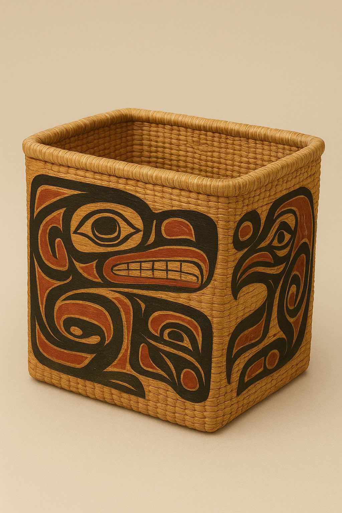
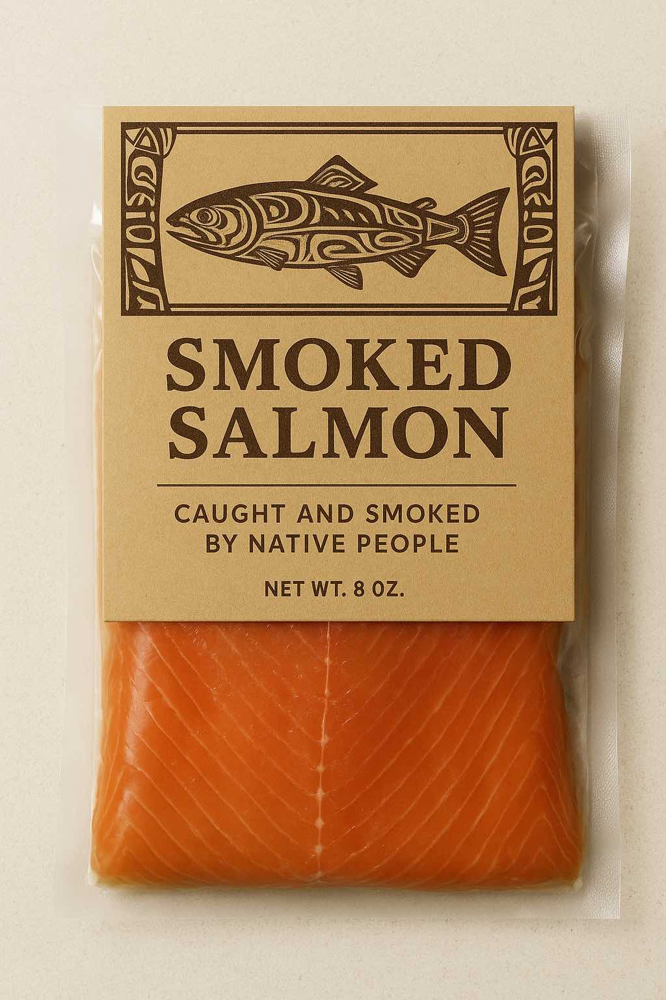

Each native tribe uses its own intricate designs.
Storage Basket
Handwoven cedar-root basket inspired by Pacific Northwest Coast designs, featuring traditional formline art in rich red and black tones.
Price: $45.00
Includes historic photos.
Museum Cookbook
Every recipe tells a story in this collection. Dishes for every occasion arranged by main ingredient.
Price: $32.50

Currently featuring Coho salmon from the Quinalt tribe.
Smoked Salmon
Alder-smoked following traditional methods by a consortium of native tribal groups. Type of salmon varies by season.
Price: $24.00
Native people harvested and baked camas bulbs as a sweet, fructose-rich food.
Native Seed Packet
Current offering: Bulbs for Common Camas, once a staple food for native people. 100 seeds per packet.
Price: $12.00
Storage Basket — Details
This handwoven storage basket is crafted from sustainably harvested cedar roots, following traditional techniques of Pacific Northwest Coast Indigenous artisans. The basket’s formline patterns in deep red and black pay homage to the intricate visual language used by regional tribes for centuries. Lightweight yet sturdy, it’s perfect for storing textiles, keepsakes, or display items. The weaving process, passed down through generations, reflects a deep connection to local forests and the community’s cultural heritage. Each basket is unique, with subtle variations in pattern and hue, making it a one-of-a-kind collector’s piece. Beyond its practical uses, the basket is an object of artistic expression, offering insight into Indigenous design principles, symbolism, and craftsmanship. Ideal for collectors, history enthusiasts, or anyone who appreciates functional art, this basket brings both beauty and history into your home, creating a tangible link to Pacific Northwest traditions.
Museum Cookbook — Details
The Museum Cookbook is a curated collection of historic and contemporary recipes from the Pacific Northwest, each paired with fascinating stories and archival photographs. It celebrates the culinary traditions of the region, highlighting seasonal ingredients, local fisheries, and Indigenous foodways that have shaped the landscape for generations. Recipes range from everyday staples to celebratory dishes, offering guidance on preparation, techniques, and presentation. The book is illustrated with carefully preserved photos from museum collections, showing kitchens, ingredients, and dining customs from past eras. Beyond being a functional cookbook, it is a historical document, bridging the gap between food, culture, and storytelling. Each page is designed to inspire both cooking and exploration, encouraging readers to connect with regional heritage while creating meals that reflect the flavors and practices of local communities. This cookbook is perfect for food lovers, history buffs, and anyone seeking to taste the past.
Smoked Salmon — Details
Tur Smoked Salmon is prepared using traditional alder-smoking techniques employed by Pacific Northwest Indigenous communities. The fish is sourced seasonally from sustainably managed rivers and coasts, ensuring the highest quality and environmental responsibility. Alder wood imparts a subtle, earthy sweetness, highlighting the natural flavors of the salmon without overpowering it. Each fillet is carefully cured and smoked, producing a tender, flaky texture with rich, smoky undertones. Smoked Salmon has been a vital source of nutrition and cultural identity for regional tribes, traditionally consumed fresh, smoked, or preserved for winter months. Beyond its culinary excellence, our salmon supports local Indigenous fisheries, helping to sustain both community livelihoods and cultural practices. Enjoy it as part of a simple snack, a festive entrée, or incorporated into traditional dishes. With every bite, you experience a connection to the land, the water, and the generations of care that preserve this extraordinary Pacific Northwest resource.
Native Seed Packet — Details
The Native Seed Packet contains 100 bulbs of Common Camas, a plant historically cultivated by Indigenous peoples of the Pacific Northwest for its sweet, nutrient-rich bulbs. Camas played a central role in seasonal diets, ceremonial events, and trade networks. The bulbs thrive in well-drained soils and can be grown in home gardens or larger restoration projects, promoting biodiversity and pollinator support. Planting these seeds not only provides a beautiful flowering plant but also helps preserve an ecologically and culturally significant species. The packet includes planting guidance, tips for seasonal care, and historical notes on the traditional harvesting practices. By cultivating these bulbs, gardeners actively participate in maintaining Indigenous agricultural traditions and local ecological health. Perfect for educators, gardeners, and cultural heritage enthusiasts, the Native Seed Packet combines hands-on engagement with a meaningful connection to regional history, offering both aesthetic beauty and the satisfaction of contributing to ecological preservation.
 Includes historic photos.
Includes historic photos.
 Native people harvested and baked camas bulbs as a sweet, fructose-rich food.
Native people harvested and baked camas bulbs as a sweet, fructose-rich food.